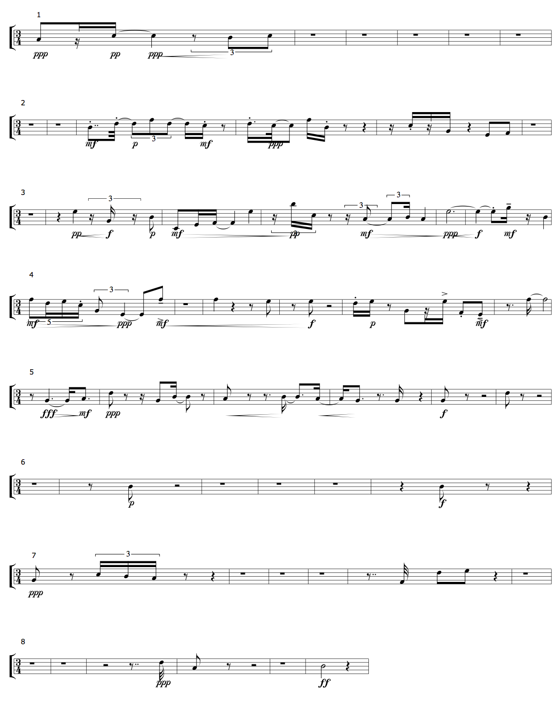

"Tempus Perfectum" — Composing with L-Systems
+ Associated files
- The slippery-chicken file from this guide
- The MIDI output generated by this file
- The PDF score produced with this file's LilyPond output
- The CMN EPS output generated by this file
- An MP3 of the piece using instrument samples
- An MP3 of the first computer ("tape") part
- An MP3 of the second computer ("tape") part
NB: An exercise relating to the material covered in this tutorial can be found on the Exercises page.
This demo piece, Tempus Perfectum, and its accompanying tutorial, will explore the use of L-systems to generate material for slippery chicken compositions. It also provides a concrete example of the use of slippery chicken with Common Lisp Music (CLM).
More detail is available for both of these slippery chicken features on the L-systems and slippery chicken and CLM pages of the manual.
+ The code
The code is first presented on its own here, then explained point by point below.
NB: It is strongly recommended that the user not copy and paste code from the web browser into the Lisp listener, as this can occasionally lead to errors. The code below can be downloaded in complete form under the Associated files section above.
(let* ((num-seqs 71)
(src-width 50)
(sndfile-dir
(concatenate 'string
cl-user::+slippery-chicken-home-dir+
"doc/manual/resources/"))
(ens '(((ob (oboe :midi-channel 1))
(cl (b-flat-clarinet :midi-channel 2))
(bn (bassoon :midi-channel 3))
(hn (french-horn :midi-channel 4))
(tp (c-trumpet :midi-channel 5))
(tb (tenor-trombone :midi-channel 6))
(pr (piano :midi-channel 7))
(pl (piano-lh :midi-channel 8))
(vn (violin :midi-channel 9))
(va (viola :midi-channel 11))
(vc (cello :midi-channel 12))
(c1 (computer :midi-channel 13))
(c2 (computer :midi-channel 14)))))
(seqs-rules (loop repeat (length (first ens))
with l = '(1 2 3 4 5 6 7 8)
for p from 0
with po = 1
with s = nil
do (setf s (list (nth (mod p 8) l)
(nth (mod (+ p po) 8) l)
(nth (mod (+ p (* 2 po)) 8) l)
(nth (mod (+ p (* 3 po)) 8) l)))
collect (list (1+ p) s)
when (= 8 (first s))
do (setf po (1+ po))))
(seqs (make-l-for-lookup 'l-seqs
'((1 ((1)))
(2 ((2)))
(3 ((3)))
(4 ((4)))
(5 ((5)))
(6 ((6)))
(7 ((7)))
(8 ((8))))
seqs-rules))
(rsm-lists
(loop for s from 1 to (length (first ens))
for p in (loop for i in (first ens)
collect (first i))
collect (list p (flatten (do-simple-lookup seqs s num-seqs)))))
(sp '((1 ((cs2 f2 a2 ds2 c3 cs3 d3 gs3 c4 cs4 fs4 g4 gs4 a4 bf4 b4 d5 ds5
e5 f5 fs5 a5)))))
(harms-list (loop repeat (length (second (first rsm-lists)))
collect 1))
(set-lims-progs
(loop for pchs in '((gs ds5) (g4 fs5) (cs4 fs5) (c4 fs5) (d3 e5)
(d3 e5) (d3 b4) (cs3 b4) (cs3 ds5) (cs3 ds5)
(d3 b4) (cs3 a4) (cs3 e5) (d3 e5) (d3 a5) (c4 a5)
(c4 e5) (c4 d5) (c4 ds5) (c4 f5) (g4 e5) (f2 ds5)
(c4 e5) (a2 f5) (cs2 e5) (cs2 fs5))
for n from 1
collect (list n pchs)))
(set-lims-low (loop for s in set-lims-progs
collect (first s)
collect (first (second s))))
(set-lims-high (loop for s in set-lims-progs
collect (first s)
collect (second (second s))))
(tempus-perfectum
(make-slippery-chicken
'+tempus-perfectum+
:title "Tempus Perfectum"
:ensemble ens
:staff-groupings '(3 3 2 3 2)
:tempo-map '((1 (q 112)))
:set-palette sp
:set-map (list (list 1 harms-list))
:set-limits-high `((all ,set-lims-high)
(ob (0 a5 100 a5))
(bn (0 g4 100 g4))
(hn (0 c5 100 c5))
(tb (0 g4 100 g4))
(va (0 ds5 100 ds5))
(vc (0 g4 100 g4)))
:set-limits-low `((all ,set-lims-low)
(ob (0 g4 100 g4))
(hn (0 c3 100 c3))
(tp (0 c4 100 c4))
(tb (0 a2 100 a2))
(vn (0 d4 100 d4)))
:rthm-seq-palette '((1 ((((3 4) - e (s) s - +q { 3 (te) - te te - })
((h.))
((h.))
((h.))
((h.))
((h.)))
:pitch-seq-palette ((1 3 2 3))
:marks (ppp 1 pp 2 ppp 3 cresc-beg 3 cresc-end
4 )))
(2 ((((3 4) (h.))
((h.))
(- e.. 32 - { 3 - +te te te } - - +s s - (e))
(- s. 32 +e - - s s - (e) (q))
((s) - s (s) s - (q) - e e -)
((h.)))
:pitch-seq-palette ((5 7 9 7 6 7 6 9 5 6 3 1
2))
:marks (mf 1 s 1 2 p 3 mf 7 s 7 8 ppp 9 s 12
13)))
(3 ((((3 4) (h.))
((q) q { 3 (ts) ts (ts) } e )
(- e s s - +q q)
({ 3 (ts) - ts ts - } (e) { 3 (ts) te }
{ 3 - +te ts - } q)
(h.)
(+q - +e s - (s) q))
:pitch-seq-palette ((10 5 7 1 3 4 10 14 8 6 7
6 10 12 7))
:marks (pp 1 cresc-beg 1 cresc-end 2 f 2 p 3
mf 4 dim-beg 4 dim-end 9 pp 9 mf 11
dim-beg 11 dim-end 15 ppp 15
cresc-beg 15 cresc-end 16 f 16 s
17 mf 18 te 18)))
(4 ((((3 4) { 5 - fe fs fs fs - } { 3 te tq }
- +e e -)
((h.))
(q (q) (e) e)
((e) e (h))
(- s s - (e) - e (s) s - - e e -)
((e.) s +h))
:pitch-seq-palette ((9 7 8 6 3 1 9 9 8 8 7 8 3
8 2 1 (9)))
:marks (mf 1 dim-beg 1 s 4 ppp 6 dim-end 6 mf
8 at 8 cresc-beg 8 cresc-end 11 f
11 s 12 p 13 a 15 s 16 at 17 mf
17)))
(5 ((((3 4) (e) q. - +s e. -)
(e (e) (s) - e s - +e (e))
(e (e) (e.) s - +e. s -)
(- +s e. - (e.) s (q))
(e (e) (h))
(e (e) (h)))
:pitch-seq-palette ((1 2 (5) 1 3 2 3 2 1 1 1
(5)))
:marks (fff 1 dim-beg 1 mf 3 dim-end 3 ppp 4
cresc-beg 8 cresc-end 9 cresc-beg
11 cresc-end 13 f 15)))
(6 ((((3 4) (h.))
((e) e (h))
((h.))
((h.))
((h.))
((q) e (e) (q)))
:pitch-seq-palette ((1 (1)))
:marks (p 1 f 2)))
(7 ((((3 4) e (e) { 3 - ts ts ts - } (e) (q))
((h.))
((h.))
((h.))
((e..) 32 - e e - (q))
((h.)))
:pitch-seq-palette ((2 5 4 3 1 6 7))
:marks (ppp 1)))
(8 ((((3 4) (h.))
((h.))
((h) (e..) 32)
(e (e) (h))
((h.))
(h (q)))
:pitch-seq-palette ((4 1 (2)))
:marks (ppp 1 ff 3))))
:rthm-seq-map (list (list 1 rsm-lists))
:snd-output-dir "/tmp"
:sndfile-palette `(((vocal-sounds
((voice-womanKP-18 :frequency 1028)
(voice-womanKP-20 :frequency 456)
(voice-womanKP-21 :frequency 484)
(voice-womanKP-22 :frequency 591)
(voice-womanKP-23 :frequency 662)
(voice-womanKP-26 :frequency 516)
(voice-womanKP-29 :frequency 629)))
(mouth-pops-clicks
((mouth_pop_2 :frequency 375)
(mouth_pop_2a :frequency 798)
(mouthnoises2 :frequency 703))))
,(list sndfile-dir)
("wav")))))
(clm-play tempus-perfectum 1 '(c1) 'vocal-sounds
:rev-amt 0.07
:reset-snds-each-rs nil
:pitch-synchronous t
:src-width src-width
:srate 44100
:header-type clm::mus-aiff
:data-format clm::mus-bshort
:sndfile-extension ".aiff")
(clm-play tempus-perfectum 1 '(c2) 'mouth-pops-clicks
:rev-amt 0.07
:reset-snds-each-rs nil
:pitch-synchronous t
:src-width src-width
:srate 44100
:header-type clm::mus-aiff
:data-format clm::mus-bshort
:sndfile-extension ".aiff")
(setf (staff-name (get-data-data 'pl (ensemble tempus-perfectum))) " ")
(midi-play tempus-perfectum
:midi-file "/tmp/tempus-perfectum.mid"
:voices '(ob cl bn hn tp tb pr pl vn va vc))
(cmn-display tempus-perfectum
:file "/tmp/tempus-perfectum.eps"
:size 11
:players '(ob cl bn hn tp tb pr pl vn va vc)
:in-c t)
(write-lp-data-for-all tempus-perfectum
:players '(ob cl bn hn tp tb pr pl vn va vc)
:in-c t))
;;;;;;;;;;;;;;;;;;;;;;;;;;;;;;;;;;;;;;;;;;;;;;;;;;;;;;;;;;;;;;;;;;;;;;;;;;;;;;;
;;; EOF tempus-perfectum.lsp
The code explained
+ The concept behind the piece
Tempus perfectum was a term that designated triple meter in the mensural notation systems of the Renaissance. A triple meter based on three duple beats (tempus perfectum prolatio minor) was the equivalent of today's 3/4 time, and was indicated in the score by an empty full circle.[1]
This piece is constructed from self-similar patterns of
eight rthm-seq objects that are all in 3/4 time. The
specific rhythms and melodic contours of these rthm-seqs
are loosely based on a 6-bar passage from Luciano
Berio's Circles. In keeping with the cyclical concept and
with the source composer, the pitch set used and the sculpting of the
ensemble's overall tessitura are loosely based on a passage from
Berio's Ritorno Degli Snovidenia.
The sound files chosen for the computer part are samples of female vocalise and mouth sounds (all from the Open Path Music Collection V5 and the Berklee College of Music Sampling Archive V5 sample collections at the One Laptop Per Child (OLPC) Free Sound Samples website), as a further aspect of homage to Berio's landmark work.
Notes
[1] Apel, W (1972). Harvard Dictionary of Music, 2nd Edition, 22nd Printing. Entry on Mensural Notation, p.520. Cambridge, MA: Harvard University Press
+ The opening variables
As with Nouveau Reich, the
code for this composition begins with a number of fundamental
variables, including num-seqs, src-width,
and sndfile-dir, which determine the length of the
piece, the quality of the sound file sample transposition, and the
directory where the sound files used in the computer part are
stored.
The sndfile-dir variable uses Lisp's
concatenate function together
with slippery-chicken's built-in global variable for its
home directory to create the string for the path to
the sc/doc/manual/resources/ directory.
The ensemble is also predefined here and assigned to
the variable ens. This enables the subsequent loops that
generate the L-system rules and the rthm-seq-map to be
based on the number of players in the ensemble and their IDs,
allowing the user to change the instrumentation and have the rules
and rthm-seq-map automatically changed accordingly.
(let* ((num-seqs 71)
(src-width 50)
(sndfile-dir
(concatenate 'string
cl-user::+slippery-chicken-home-dir+
"doc/manual/resources/"))
(ens '(((ob (oboe :midi-channel 1))
(cl (b-flat-clarinet :midi-channel 2))
(bn (bassoon :midi-channel 3))
(hn (french-horn :midi-channel 4))
(tp (c-trumpet :midi-channel 5))
(tb (tenor-trombone :midi-channel 6))
(pr (piano :midi-channel 7))
(pl (piano-lh :midi-channel 8))
(vn (violin :midi-channel 9))
(va (viola :midi-channel 11))
(vc (cello :midi-channel 12))
(c1 (computer :midi-channel 13))
(c2 (computer :midi-channel 14)))))
Using L-systems to generate the rthm-seq-map
+ The elements
The order in which the rthm-seq objects occur in each
player's part in Tempus Perfectum is determined using an
L-system. The piece has eight separate 6-bar rthm-seqs,
each with a numeric ID, so the list of elements in the call to
make-l-for-lookup contains references to all 8 of these
IDs.
(seqs (make-l-for-lookup 'l-seqs
'((1 ((1)))
(2 ((2)))
(3 ((3)))
(4 ((4)))
(5 ((5)))
(6 ((6)))
(7 ((7)))
(8 ((8))))
seqs-rules))
+ The rules
The rules for this l-for-lookup object are defined
immediately prior to calling make-l-for-lookup and are
passed to the function through the
variable seqs-rules. They are constructed using a loop
to collect a different 4-element set from the numbers 1
to 8 for each of the players in the piece. Having a
separate rule for each player ensures that each player will have a
different sequence of rthm-seqs in the course of the
piece.
(seqs-rules (loop repeat (length (first ens))
with l = '(1 2 3 4 5 6 7 8)
for p from 0
with po = 1
with s = nil
do (setf s (list (nth (mod p 8) l)
(nth (mod (+ p po) 8) l)
(nth (mod (+ p (* 2 po)) 8) l)
(nth (mod (+ p (* 3 po)) 8) l)))
collect (list (1+ p) s)
when (= 8 (first s))
do (setf po (1+ po))))
This loop produces the following rules:
=> ((1 (1 2 3 4)) (2 (2 3 4 5)) (3 (3 4 5 6)) (4 (4 5 6 7)) (5 (5 6 7 8)) (6 (6 7 8 1)) (7 (7 8 1 2)) (8 (8 1 2 3)) (9 (1 3 5 7)) (10 (2 4 6 8)) (11 (3 5 7 1)) (12 (4 6 8 2)) (13 (5 7 1 3)))
+ Constructing the rthm-seq-map using do-simple-lookup
The inner portions of the rthm-seq-map are then
constructed and assigned to the variable rsm-lists. They
are assembled from the previously created l-for-lookup
object using a loop that pairs the IDs of the players, as listed in
the variable ens, with the flattened results of
the do-simple-lookup method. (See the source code
documentation for
the flatten
function for more detail.)
The do-simple-lookup method is called using
the seqs variable as its first argument to create
separate lists that are num-seqs long for each of the
players assigned to p, including the two computer
parts. It creates these lists by initiating each L-system iteration
with a different axiom, consisting of consecutive numbers
from 1 to the length of the list of players in
the ens variable (13, one for each
rule/player).
(rsm-lists
(loop for s from 1 to (length (first ens))
for p in (loop for i in (first ens)
collect (first i))
collect (list p (flatten (do-simple-lookup seqs s num-seqs)))))
This loop ensures that each player's part in
the rthm-seq-map begins with a differently ordered
sequence. After this initial difference, all subsequent sequences
will only be created using rules 1
through 8, as these are the only elements used in each
rule. The combination of the rules and this particular loop produces
a rthm-seq-map in which all players play
all rthm-seqs of the rthm-seq-palette at
least once during the course of the piece.
+ Self-similarity in the results
The resulting rthm-seq-map would look like this if
written out in full, with a few of the repeating sequences
color-coded to highlight the self-similarity:
((OB (1 2 3 4 2 3 4 5 3 4 5 6 4 5 6 7 2 3 4 5 3 4 5 6 4 5 6 7 5 6 7 8 3 4 5 6 4 5 6 7 5 6 7 8 6 7 8 1 4 5 6 7 5 6 7 8 6 7 8 1 7 8 1 2 2 3 4 5 3 4 5)) (CL (2 3 4 5 3 4 5 6 4 5 6 7 5 6 7 8 3 4 5 6 4 5 6 7 5 6 7 8 6 7 8 1 4 5 6 7 5 6 7 8 6 7 8 1 7 8 1 2 5 6 7 8 6 7 8 1 7 8 1 2 8 1 2 3 3 4 5 6 4 5 6)) (BN (3 4 5 6 4 5 6 7 5 6 7 8 6 7 8 1 4 5 6 7 5 6 7 8 6 7 8 1 7 8 1 2 5 6 7 8 6 7 8 1 7 8 1 2 8 1 2 3 6 7 8 1 7 8 1 2 8 1 2 3 1 2 3 4 4 5 6 7 5 6 7)) (HN (4 5 6 7 5 6 7 8 6 7 8 1 7 8 1 2 5 6 7 8 6 7 8 1 7 8 1 2 8 1 2 3 6 7 8 1 7 8 1 2 8 1 2 3 1 2 3 4 7 8 1 2 8 1 2 3 1 2 3 4 2 3 4 5 5 6 7 8 6 7 8)) (TP (5 6 7 8 6 7 8 1 7 8 1 2 8 1 2 3 6 7 8 1 7 8 1 2 8 1 2 3 1 2 3 4 7 8 1 2 8 1 2 3 1 2 3 4 2 3 4 5 8 1 2 3 1 2 3 4 2 3 4 5 3 4 5 6 6 7 8 1 7 8 1)) (TB (6 7 8 1 7 8 1 2 8 1 2 3 1 2 3 4 7 8 1 2 8 1 2 3 1 2 3 4 2 3 4 5 8 1 2 3 1 2 3 4 2 3 4 5 3 4 5 6 1 2 3 4 2 3 4 5 3 4 5 6 4 5 6 7 7 8 1 2 8 1 2)) (PR (7 8 1 2 8 1 2 3 1 2 3 4 2 3 4 5 8 1 2 3 1 2 3 4 2 3 4 5 3 4 5 6 1 2 3 4 2 3 4 5 3 4 5 6 4 5 6 7 2 3 4 5 3 4 5 6 4 5 6 7 5 6 7 8 8 1 2 3 1 2 3)) (PL (8 1 2 3 1 2 3 4 2 3 4 5 3 4 5 6 1 2 3 4 2 3 4 5 3 4 5 6 4 5 6 7 2 3 4 5 3 4 5 6 4 5 6 7 5 6 7 8 3 4 5 6 4 5 6 7 5 6 7 8 6 7 8 1 1 2 3 4 2 3 4)) (VN (1 2 3 4 2 3 4 5 3 4 5 6 4 5 6 7 2 3 4 5 3 4 5 6 4 5 6 7 5 6 7 8 3 4 5 6 4 5 6 7 5 6 7 8 6 7 8 1 4 5 6 7 5 6 7 8 6 7 8 1 7 8 1 2 3 4 5 6 4 5 6)) (VA (2 3 4 5 3 4 5 6 4 5 6 7 5 6 7 8 3 4 5 6 4 5 6 7 5 6 7 8 6 7 8 1 4 5 6 7 5 6 7 8 6 7 8 1 7 8 1 2 5 6 7 8 6 7 8 1 7 8 1 2 8 1 2 3 4 5 6 7 5 6 7)) (VC (3 4 5 6 4 5 6 7 5 6 7 8 6 7 8 1 4 5 6 7 5 6 7 8 6 7 8 1 7 8 1 2 5 6 7 8 6 7 8 1 7 8 1 2 8 1 2 3 6 7 8 1 7 8 1 2 8 1 2 3 1 2 3 4 5 6 7 8 6 7 8)) (C1 (4 5 6 7 5 6 7 8 6 7 8 1 7 8 1 2 5 6 7 8 6 7 8 1 7 8 1 2 8 1 2 3 6 7 8 1 7 8 1 2 8 1 2 3 1 2 3 4 7 8 1 2 8 1 2 3 1 2 3 4 2 3 4 5 6 7 8 1 7 8 1)) (C2 (5 6 7 8 6 7 8 1 7 8 1 2 8 1 2 3 6 7 8 1 7 8 1 2 8 1 2 3 1 2 3 4 7 8 1 2 8 1 2 3 1 2 3 4 2 3 4 5 8 1 2 3 1 2 3 4 2 3 4 5 3 4 5 6 7 8 1 2 8 1 2)))
Occasional rhythmic unison in multiple parts
As can be seen in the code example above, the use of different
axioms for each call to do-simple-lookup still produces
a number of instances where the same sequence segment appears in more
than one part simultaneously. This will produce a nice effect of
coupling (non-unison rhythmic doubling) in various passages of the
instrumental parts.
+ Shaping the ensemble's tessitura
One set for the entire piece
This piece uses a different approach to controlling the progression
of pitch collections (sets) over the course of a slippery
chicken composition than that of the first three demo
compositions. Instead of defining multiple sets and assigning their
IDs to individual sequences in the set-map, one set of
pitches is defined for the entire piece, and the subsets of pitches
available to the ensemble as the piece progresses are governed using
the set-limits-high and -low slots in
conjunction with their all option.
The set of pitches is given the ID 1 and assigned to
the variable sp, and a simple loop is used to collect a
list of 1s that is equal in length to the list
of rthm-seqs and assigned to the
variable harms-list.
(sp '((1 ((cs2 f2 a2 ds2 c3 cs3 d3 gs3 c4 cs4 fs4 g4 gs4 a4 bf4 b4 d5 ds5
e5 f5 fs5 a5)))))
(harms-list (loop repeat (length (second (first rsm-lists)))
collect 1))
Collecting the high and low set limits
The gradually changing upper and lower pitch limits within this set
are then determined by first collecting a list of consecutive
integers from 1 and pairing them with sublists
consisting of the lowest and highest pitches available to the
ensemble at consecutive points within the piece. The results of this
loop are assigned to the variable set-lims-progs.
(set-lims-progs
(loop for pchs in '((g4 ds5) (g4 fs5) (cs4 fs5) (c4 fs5) (d3 e5)
(d3 e5) (d3 b4) (cs3 b4) (cs3 ds5) (cs3 ds5)
(d3 b4) (cs3 a4) (cs3 e5) (d3 e5) (d3 a5) (c4 a5)
(c4 e5) (c4 d5) (c4 ds5) (c4 f5) (g4 e5) (f2 ds5)
(c4 e5) (a2 f5) (cs2 e5) (cs2 fs5))
for n from 1
collect (list n pchs)))
The set-lims-progs list is then further broken down
into the -high and -low lists with two more
loops. The first of these collects each consecutive number and the
first pitch of the sublist it is paired with (the low pitch), and
the second collects the same number with the second pitch of the
sublist (the high pitch).
The resulting lists are assigned to the
variables set-lims-low and set-lims-high,
which are later paired with the word all (to control the
tessitura of the entire ensemble rather than individual instruments)
and passed to the set-limits-high and -low
keywords of the make-slippery-chicken function.
(set-lims-low (loop for s in set-lims-progs
collect (first s)
collect (first (second s))))
(set-lims-high (loop for s in set-lims-progs
collect (first s)
collect (second (second s))))
+ The call to make-slippery-chicken
As with Nouveau Reich, this composition assigns the results
of the make-slippery-chicken function to a variable, in
this case tempus-perfectum. The first few keyword
arguments of the function are either passed straightforward values
directly (:title, :staff-groupings, and
:tempo-map), or are passed one of the previously
declared variables (:ensemble,
:set-palette, and :set-map).
(tempus-perfectum
(make-slippery-chicken
'+tempus-perfectum+
:title "Tempus Perfectum"
:ensemble ens
:staff-groupings '(3 3 2 3 2)
:tempo-map '((1 (q 112)))
:set-palette sp
:set-map (list (list 1 harms-list))
+ Additional set-limits- for individual players
In addition to the overall tessitura defined above, the code
for Tempus Perfectum also sets high and low pitch limits for
a number of the players in the ensemble. These limits are static and
assigned for the entire piece using x-values of 0
and 100 for the break-point pairs. For example, the code
specifies that the oboe will be given no pitches
below G4, and that the bassoon, trombone, and cello will
not have any pitches above G4.
:set-limits-high `((all ,set-lims-high)
(ob (0 a5 100 a5))
(bn (0 g4 100 g4))
(hn (0 c5 100 c5))
(tb (0 g4 100 g4))
(va (0 ds5 100 ds5))
(vc (0 g4 100 g4)))
:set-limits-low `((all ,set-lims-low)
(ob (0 g4 100 g4))
(hn (0 c3 100 c3))
(tp (0 c4 100 c4))
(tb (0 a2 100 a2))
(vn (0 d4 100 d4)))
+ Multi-bar rthm-seqs with lots of rests
In defining the rthm-seq-palette, much attention is
given in Tempus Perfectum to ensuring that there are a
considerable number of full-bar rests in the
multi-bar rthm-seqs. This is done to allow for more
differentiated orchestration and more discernible combinations
of motifs when they are superimposed.
Only one pitch-seq curve is defined for
each rthm-seq, but the rthm-seqs in this
piece are assigned specific marks that will be present
in the score each time the corresponding rthm-seq
appears.
:rthm-seq-palette '((1 ((((3 4) - e (s) s - +q { 3 (te) - te te - })
((h.))
((h.))
((h.))
((h.))
((h.)))
:pitch-seq-palette ((1 3 2 3))
:marks (ppp 1 pp 2 ppp 3 cresc-beg 3 cresc-end
4 )))
(2 ((((3 4) (h.))
((h.))
(- e.. 32 - { 3 - +te te te } - - +s s - (e))
(- s. 32 +e - - s s - (e) (q))
((s) - s (s) s - (q) - e e -)
((h.)))
:pitch-seq-palette ((5 7 9 7 6 7 6 9 5 6 3 1
2))
:marks (mf 1 s 1 2 p 3 mf 7 s 7 8 ppp 9 s 12
13)))
(3 ((((3 4) (h.))
((q) q { 3 (ts) ts (ts) } e )
(- e s s - +q q)
({ 3 (ts) - ts ts - } (e) { 3 (ts) te }
{ 3 - +te ts - } q)
(h.)
(+q - +e s - (s) q))
:pitch-seq-palette ((10 5 7 1 3 4 10 14 8 6 7
6 10 12 7))
:marks (pp 1 cresc-beg 1 cresc-end 2 f 2 p 3
mf 4 dim-beg 4 dim-end 9 pp 9 mf 11
dim-beg 11 dim-end 15 ppp 15
cresc-beg 15 cresc-end 16 f 16 s
17 mf 18 te 18)))
(4 ((((3 4) { 5 - fe fs fs fs - } { 3 te tq }
- +e e -)
((h.))
(q (q) (e) e)
((e) e (h))
(- s s - (e) - e (s) s - - e e -)
((e.) s +h))
:pitch-seq-palette ((9 7 8 6 3 1 9 9 8 8 7 8 3
8 2 1 (9)))
:marks (mf 1 dim-beg 1 s 4 ppp 6 dim-end 6 mf
8 at 8 cresc-beg 8 cresc-end 11 f
11 s 12 p 13 a 15 s 16 at 17 mf
17)))
(5 ((((3 4) (e) q. - +s e. -)
(e (e) (s) - e s - +e (e))
(e (e) (e.) s - +e. s -)
(- +s e. - (e.) s (q))
(e (e) (h))
(e (e) (h)))
:pitch-seq-palette ((1 2 (5) 1 3 2 3 2 1 1 1
(5)))
:marks (fff 1 dim-beg 1 mf 3 dim-end 3 ppp 4
cresc-beg 8 cresc-end 9 cresc-beg
11 cresc-end 13 f 15)))
(6 ((((3 4) (h.))
((e) e (h))
((h.))
((h.))
((h.))
((q) e (e) (q)))
:pitch-seq-palette ((1 (1)))
:marks (p 1 f 2)))
(7 ((((3 4) e (e) { 3 - ts ts ts - } (e) (q))
((h.))
((h.))
((h.))
((e..) 32 - e e - (q))
((h.)))
:pitch-seq-palette ((2 5 4 3 1 6 7))
:marks (ppp 1)))
(8 ((((3 4) (h.))
((h.))
((h) (e..) 32)
(e (e) (h))
((h.))
(h (q)))
:pitch-seq-palette ((4 1 (2)))
:marks (ppp 1 ff 3))))
A cmn-display of the rthm-seq-palette
A cmn-display processing of the above palette produces
the following graphic:
|  |
Incorporating CLM and sound files into the composition
+ Adding separate computer players to the ensemble
In order to generate rhythmically and melodically independent
computer parts for the piece, two separate computer players are added
to the ensemble. These are given the IDs c1
and c2, and assigned the computer
instrument from
the +slippery-chicken-standard-instrument-palette:
'(((ob (oboe :midi-channel 1))
(cl (b-flat-clarinet :midi-channel 2))
(bn (bassoon :midi-channel 3))
(hn (french-horn :midi-channel 4))
(tp (c-trumpet :midi-channel 5))
(tb (tenor-trombone :midi-channel 6))
(pr (piano :midi-channel 7))
(pl (piano-lh :midi-channel 8))
(vn (violin :midi-channel 9))
(va (viola :midi-channel 11))
(vc (cello :midi-channel 12))
(c1 (computer :midi-channel 13))
(c2 (computer :midi-channel 14))))
These two parts are also included in the loop that generates
the rthm-seq-map, as described above.
NB: The phrase "computer player" used here does not mean
a live performer sitting at a computer and playing it in
real-time. Instead, it refers to a player object within
the ensemble of the slippery-chicken object
that is assigned to the computer instrument of
the slippery-chicken-standard-instrument-palette. Each
of the two players using the computer
instrument in this piece will merely be separate parts (separate
rhythmic and pitch structures) that will eventually be used to create
fixed-media (non-real-time) "tape" parts, which will most likely be
played back using audio software on a computer.
+ Setting up the output directory and sndfile-palette
Next, the output directory for the CLM output and the source sound
files used to generate that output are specified using
the :snd-output-dir and :sndfile-palette
keywords of the make-slippery-chicken
function.
The sndfile-palette uses the previously
defined sndfile-dir variable to specify the path to the
location of the source sound files. Since all of the files
are .wav files, the string "wav" is added
to the extensions slot of
the sndfile-palette, with the extension omitted from the
file names.
(sndfile-dir
(concatenate 'string
cl-user::+slippery-chicken-home-dir+
"doc/manual/resources/"))
[...]
:snd-output-dir "/tmp"
:sndfile-palette `(((vocal-sounds
((voice-womanKP-18 :frequency 1028)
(voice-womanKP-20 :frequency 456)
(voice-womanKP-21 :frequency 484)
(voice-womanKP-22 :frequency 591)
(voice-womanKP-23 :frequency 662)
(voice-womanKP-26 :frequency 516)
(voice-womanKP-29 :frequency 629)))
(mouth-pops-clicks
((mouth_pop_2 :frequency 375)
(mouth_pop_2a :frequency 798)
(mouthnoises2 :frequency 703))))
,(list sndfile-dir)
("wav")))))
One group for each call to clm-play
The sndfile-palette is constructed to consist of two
groups of source sound files, the first being vocalized sounds, the
second being non-vocalized mouth sounds. These groups are given the
names vocal-sounds and mouth-pops-clicks,
which will be used in the two calls to clm-play
below.
Preparing pitch-synchronous transposition of the source files
Fundamental frequencies are specified for each of the sound files,
as the calls to clm-play will employ
the pitch-synchronous option.
+ Generating the computer parts
The two computer parts are then produced by using separate calls
to clm-play
for each sound file group and each computer player, specifying values
for a number of the method's keyword arguments. These calls also make
use of the previously defined variable src-width, which
is set to 50 to produce a slightly higher quality of
sample interpolation when transposing the sound files.
(src-width 50)
[...]
(clm-play tempus-perfectum 1 '(c1) 'vocal-sounds
:rev-amt 0.07
:reset-snds-each-rs nil
:pitch-synchronous t
:src-width src-width
:srate 44100
:header-type clm::mus-aiff
:data-format clm::mus-bshort
:sndfile-extension ".aiff")
(clm-play tempus-perfectum 1 '(c2) 'mouth-pops-clicks
:rev-amt 0.07
:reset-snds-each-rs nil
:pitch-synchronous t
:src-width src-width
:srate 44100
:header-type clm::mus-aiff
:data-format clm::mus-bshort
:sndfile-extension ".aiff")
Required arguments
The first required argument to clm-play is
the slippery-chicken object itself, and the second is
the section within the piece from which to start. Since
Tempus Perfectum has only one section, the
number 1 is specified here. The third required argument
is the ID of the player (or players) whose part is to serve as the
basis for the resulting CLM output. This is specified
as c1 in the first case and c2 in the
second. The final required argument is the ID of the group of sound
files specified in the sndfile-palette from which the
CLM output is to be generated. The c1 part is to be
based on the vocal-sounds group, and the second on
the mouth-pops-clicks group.
Optional keyword arguments
Each of the calls to clm-play uses the same optional
arguments. The same amount of reverb is specified for each output
file using the rev-amt keyword. Setting
the reset-snds-each-rs argument to NIL
causes the method to cycle through the sound files of the given group
for the whole duration of the piece, without beginning at the head of
the group with each new rthm-seq.
Setting the pitch-synchronous argument
to T causes the method to transpose the source sound
files to match the specific pitches of the part on which the output
is based, using the frequency value specified in
the sndfile-palette as the basis for this
transposition. The src-width argument determines the
quality of the interpolation during transposition, as mentioned
above.
The last four arguments determine the output format of the files
that CLM will generate. The srate
and sndfile-extension arguments determine the sample
rate and file suffix for the files
produced. The header-type and data-format
arguments are CLM arguments and must be preceded by
the clm:: package qualifier. The values given here will
result in stereo .aiff audio files, with the
extension .aiff (default is
otherwise .aif), and with a format of 16-bit integer
(big endian). More on these arguments can be found on
the slippery chicken and CLM page of
the manual.
+ Generating the MIDI and printable score output
Changing the staff name of the piano left-hand
Before generating the printable score output, one last change is
made to the slippery-chicken
object. The piano-lh instrument object of
the +slippery-chicken-standard-instrument-palette+ has
no entry for the staff-name
and staff-short-name slots, meaning that those slots
contain NIL. LilyPond handles this by printing blank
space for the corresponding staff names in the score. CMN, however,
will print NIL into the score.
To work around this, the code for Tempus Perfectum sets
the staff-name slot of the
corresponding instrument object stored within
the ensemble slot of the slippery-chicken
object itself, rather than changing the value in
the instrument-palette. The setf approach
to changing slot values is used here rather than
the set-slot method, though that method could be used as
well (see the page
on instruments and
instrument-palettes for more detail.)
(setf (staff-name (get-data-data 'pl (ensemble tempus-perfectum))) " ")
Excluding the computer parts from MIDI and score output
The calls to midi-play, cmn-display,
and write-lp-data-for-all then use
the :voices and :player keywords to exclude
the computer players from the MIDI and printable score output. This
is done by specifying in list form the IDs of all players that are to
be included in the output. Additionally, the :in-c
argument is set to T to produce C-scores, and
the :size argument of clm-play is set
to 11 to ensure that the full score fits on the
page.
(midi-play tempus-perfectum
:midi-file "/tmp/tempus-perfectum.mid"
:voices '(ob cl bn hn tp tb pr pl vn va vc))
(cmn-display tempus-perfectum
:file "/tmp/tempus-perfectum.eps"
:size 11
:players '(ob cl bn hn tp tb pr pl vn va vc)
:in-c t)
(write-lp-data-for-all tempus-perfectum
:players '(ob cl bn hn tp tb pr pl vn va vc)
:in-c t))
Adding the \midi { } command to the LilyPond score file
A final step was undertaken to produce the MP3 of the MIDI mock-up
for this tutorial. The midi-play method of
the slippery-chicken class only reflects static dynamics
in the score, without implementing crescendos/diminuendos or
articulation. The LilyPond application is capable of producing a MIDI
file that reflects articulation and gradual dynamic changes slightly
more accurately (though the authors of that program too explicitly
state that LilyPond is not made for MIDI).
In order to have LilyPond produce a second MIDI file, the
resulting _tempus-perfectum-score.ly file produced
by write-lp-data-for-all was edited prior to having
LilyPond render the PDF of the score, by inserting one simple line,
namely \midi { }, as seen below.
The MIDI file produced by LilyPond
(_tempus-perfectum-score.midi) will have separate tracks
for each player, but all program numbers (patches) will be set
to 1 (Acoustic Grand Piano) by default. This was not an
issue when producing the MIDI mock-up for Tempus Perfectum, as
the resulting MIDI file was then imported into a MIDI sequencer and the
tracks were manually assigned to instrument tracks that used
sample-based VST plug-ins.
\version "2.14.2"
\include "tempus-perfectum-def.ly"
\header {
title ="Tempus Perfectum"
tagline = ##f
composer = ##f
}
\score {
\keepWithTag #'score \music
\midi { }
\layout { }
}